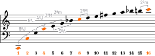
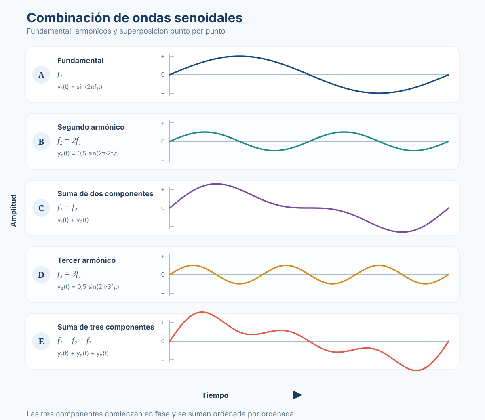
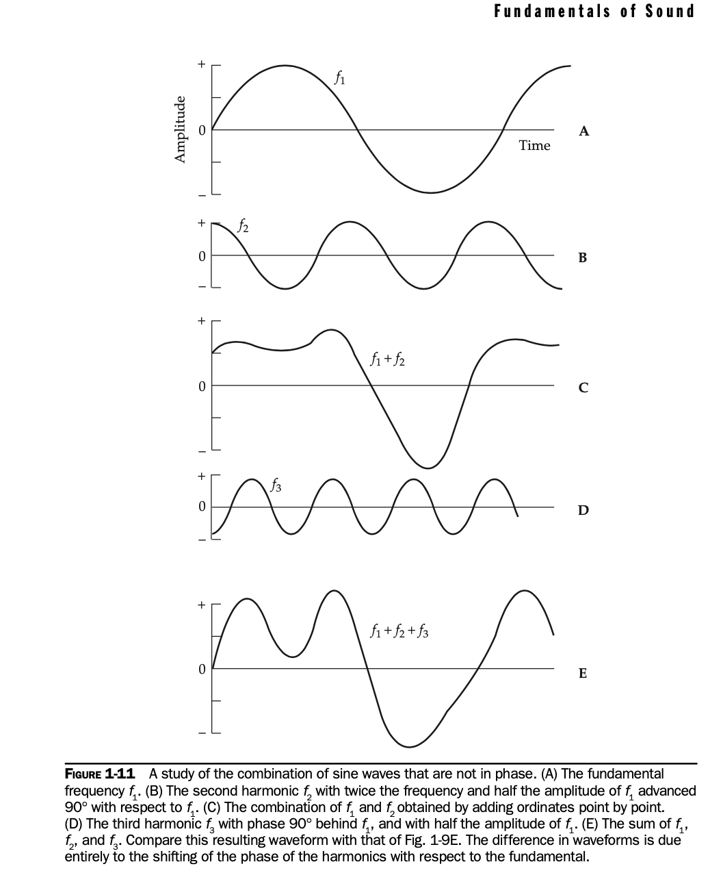

Sesión 4: Señales periódicas y aperiódicas¶
Unidades y símbolos (glosario de referencia)
Consultá esta tabla cuando encuentres una unidad o símbolo que no conozcas. Cada término en el texto está vinculado a esta tabla.
Del tono puro a la onda compleja
Un tono puro es una señal que contiene una sola frecuencia — una onda sinusoidal. Es el sonido más simple que existe: un diapasón se aproxima a él, y los tonos de prueba en audiometría son tonos puros.
Pero la mayoría de los sonidos que escuchamos — una nota de guitarra, la voz humana, un platillo — no son tonos puros. Son ondas complejas: contienen múltiples componentes frecuenciales simultáneas.
Joseph Fourier (1768–1830) demostró un teorema fundamental:
Cualquier onda periódica, sin importar cuán compleja sea, puede descomponerse en una suma de ondas sinusoidales de diferentes frecuencias, amplitudes y fases. Y viceversa: sumando sinusoides se puede sintetizar cualquier forma de onda.
| Concepto | Definición | Ejemplo musical |
|---|---|---|
| Tono puro | Una sola frecuencia sinusoidal | Diapasón, tono de prueba |
| Onda compleja periódica | Suma de sinusoides relacionadas armónicamente — el patrón se repite | Nota de violín, voz cantada |
| Onda compleja aperiódica | Componentes sin relación armónica fija — no hay período definido | Batería, ruido, consonante «s» |
Síntesis aditiva
La demostración inversa del teorema de Fourier se llama síntesis aditiva: construir un sonido complejo sumando ondas sinusoidales puras. Es el principio detrás del órgano de tubos (cada registro agrega una fila de armónicos) y de los sintetizadores aditivos.
Frecuencia fundamental, armónicos y parciales
Cuando un instrumento produce una nota, la cuerda, columna de aire o membrana vibra simultáneamente en múltiples modos. La frecuencia más baja se llama frecuencia fundamental (\(f_0\)) y determina el tono que percibimos. Las demás son sobretonos (overtones).
| Término | Definición | Relación | Ejemplo (si \(f_0 = 100\) Hz) |
|---|---|---|---|
| Fundamental (\(f_0\)) | Frecuencia más baja — define el tono percibido | \(n = 1\) | 100 Hz |
| 2° armónico | Primer sobretono armónico | \(n = 2\) | 200 Hz |
| 3° armónico | Segundo sobretono armónico | \(n = 3\) | 300 Hz |
| Parcial | Cualquier componente frecuencial de un sonido | No necesariamente múltiplo entero | 100 Hz, 215 Hz, 300 Hz... |
Todo armónico es un parcial, pero no todo parcial es armónico
Un armónico es un sobretono cuya frecuencia es múltiplo entero exacto de la fundamental. Un parcial es cualquier componente frecuencial, sea armónico o no. Instrumentos como campanas, platillos y tambores tienen parciales inarmónicos — no siguen la serie armónica exacta. Por eso suenan «metálicos» o «sin altura definida».
La serie armónica y la música
La serie armónica no es solo un concepto físico: es la base matemática de la armonía musical occidental. Cada nota musical contiene dentro de sí una serie de frecuencias que son múltiplos enteros de la fundamental. Los primeros armónicos definen los intervalos más consonantes: la octava (2:1), la quinta (3:2), la cuarta (4:3), la tercera mayor (5:4).

| Armónico | Relación | Intervalo respecto a la fundamental | Nota (aprox.) |
|---|---|---|---|
| 1° (\(f_0\)) | 1:1 | Unísono | Do |
| 2° | 2:1 | Octava | Do |
| 3° | 3:1 | Octava + quinta | Sol |
| 4° | 4:1 | Dos octavas | Do |
| 5° | 5:1 | Dos octavas + tercera mayor | Mi (♭ en temperamento) |
| 6° | 6:1 | Dos octavas + quinta | Sol |
| 7° | 7:1 | Dos octavas + séptima menor | Si♭ (♭ en temperamento) |
| 8° | 8:1 | Tres octavas | Do |
¿Por qué suenan consonantes la octava y la quinta?
Los intervalos que aparecen antes en la serie armónica (octava 2:1, quinta 3:2) son los que el oído percibe como más consonantes. No es una convención cultural arbitraria: es una consecuencia directa de la física del sonido. Cuanto más temprano aparece un intervalo en la serie, más consonante nos resulta.

Fase y su efecto sobre la forma de onda
La fase de cada componente armónico determina la forma de la onda resultante, aunque el espectro (las frecuencias presentes y sus amplitudes) sea idéntico. Esto tiene una consecuencia importante: dos sonidos con el mismo espectro pueden tener formas de onda completamente diferentes si la relación de fase entre sus componentes cambia.
| Símbolo | Nombre | Significado |
|---|---|---|
| \(f_0\) | Frecuencia fundamental | Determina el tono percibido |
| \(n \cdot f_0\) | n-ésimo armónico | Múltiplo entero de la fundamental |
| \(A_n\) | Amplitud del armónico n | Determina cuánto contribuye al timbre |
| \(\phi_n\) | Fase del armónico n | Desplazamiento temporal — cambia la forma de onda |

Fase y audición
Aunque el oído es relativamente insensible a la fase de componentes armónicos en estado estacionario, la fase es crítica en otras situaciones: (1) cuando dos señales idénticas se combinan con polaridad invertida se cancelan, (2) en la localización espacial (diferencias interaurales de fase), (3) en la suma de señales reflejadas con la directa en una sala.
Dominio temporal y dominio frecuencial: el espectro
Hay dos maneras de observar una señal sonora:
| Dominio | Eje X | Eje Y | ¿Qué muestra? |
|---|---|---|---|
| Temporal (waveform) | Tiempo s o ms | Amplitud | Cómo varía la presión en el tiempo — la forma de onda |
| Frecuencial (spectrum) | Frecuencia Hz | Amplitud | Qué frecuencias contiene la señal y con qué intensidad |
Insertar Fig. 1-13 del Everest: espectros de diferentes formas de onda — (A) onda sinusoidal (un solo pico espectral), (B) onda compleja con armónicos, (C) ruido blanco (espectro continuo). Nótese que mientras en (A) y (B) hay líneas discretas, en (C) la energía se distribuye de manera continua.
Una onda sinusoidal pura tiene un espectro con una sola línea en su frecuencia. Una onda cuadrada tiene armónicos impares (\(f_0, 3f_0, 5f_0, \ldots\)) cuyas amplitudes decrecen como \(1/n\). Una onda diente de sierra tiene todos los armónicos (\(f_0, 2f_0, 3f_0, \ldots\)) con amplitudes que decrecen como \(1/n\).
La diferencia en el espectro — qué armónicos están presentes y con qué intensidad relativa — es lo que permite a nuestro oído distinguir una nota de violín de la misma nota tocada en un piano. Esa «huella digital» espectral se llama timbre.
Señales periódicas, aperiódicas y ruido
Las señales acústicas se clasifican según su comportamiento en el tiempo:
| Tipo de señal | Definición | ¿Tiene tono? | Ejemplos |
|---|---|---|---|
| Periódica | Se repite idénticamente cada \(T\) segundos. Su espectro es discreto (líneas) | Sí — altura definida | Instrumentos melódicos, vocales |
| Aperiódica | No tiene patrón repetitivo. Su espectro es continuo | No — altura indefinida | Percusión, ruido, explosiones |
| Cuasiperiódica | Casi periódica pero con pequeñas variaciones ciclo a ciclo | Parcialmente | Voz humana (las cuerdas vocales no vibran con precisión absoluta) |
Ruido¶
El ruido es una señal aperiódica cuya energía se distribuye en un rango amplio de frecuencias. En acústica se definen varios «colores» de ruido según cómo se distribuye su energía espectral:
| Color | Comportamiento espectral | Energía por octava | ¿Cómo suena? |
|---|---|---|---|
| Ruido blanco | Energía constante por Hz | +3 dB/octava | Silbido agudo, estática de TV, lluvia fina |
| Ruido rosa | Energía constante por octava (\(1/f\)) | Plana | Más grave y balanceado, cascada, viento |
| Ruido marrón (Brown) | Energía proporcional a \(1/f^2\) | −3 dB/octava | Retumbo profundo, trueno lejano |
¿Por qué «colores»?
La analogía viene de la luz: la luz blanca contiene todas las frecuencias visibles con igual intensidad. El ruido blanco contiene todas las frecuencias audibles con igual intensidad por Hz (no por octava). Al tener más energía acumulada en las octavas altas (hay más Hz entre 10 y 20 kHz que entre 20 y 40 Hz), el ruido blanco suena agudo. El ruido rosa compensa esto: energía constante por octava → suena equilibrado al oído y se usa como referencia en mediciones acústicas.
Señales del mundo real: voz, música y ruido ambiental
Las señales que manejamos en producción musical pueden clasificarse en tres grandes categorías (Everett & Pohlmann, 2009, Cap. 5):
| Categoría | Característica espectral | Rango típico | Aplicación en producción |
|---|---|---|---|
| Voz (speech) | Armónicos + formantes (resonancias del tracto vocal fijas, no dependen del tono) | ~100 Hz – 8 kHz | Inteligibilidad, presencia en mezcla |
| Música | Armónicos + parciales inarmónicos, envolvente dinámica, ataques y decaimientos | ~30 Hz – 16 kHz | Balance espectral, ancho de banda por instrumento |
| Ruido | Continuo, sin periodicidad definida | Todo el espectro | Ruido de fondo, ambiente, efectos |
En una mezcla profesional, cada fuente ocupa una región espectral. Las frecuencias graves (20–250 Hz) contienen la fundamental de bajo, bombo y sintetizadores. Los medios (250–4,000 Hz) llevan la inteligibilidad vocal y el cuerpo de guitarras y teclados. Los agudos (4,000–20,000 Hz) aportan brillo, «aire» y definición de transitorios.
Basado en: Everest, F. A. & Pohlmann, K. C. (2009). Master Handbook of Acoustics (5th ed.). McGraw-Hill. Capítulo 1 (pp. 7–11: Complex Waves, Harmonics, Phase, Partials, Octaves, Spectrum) y Capítulo 5 (Signals, Speech, Music, and Noise).